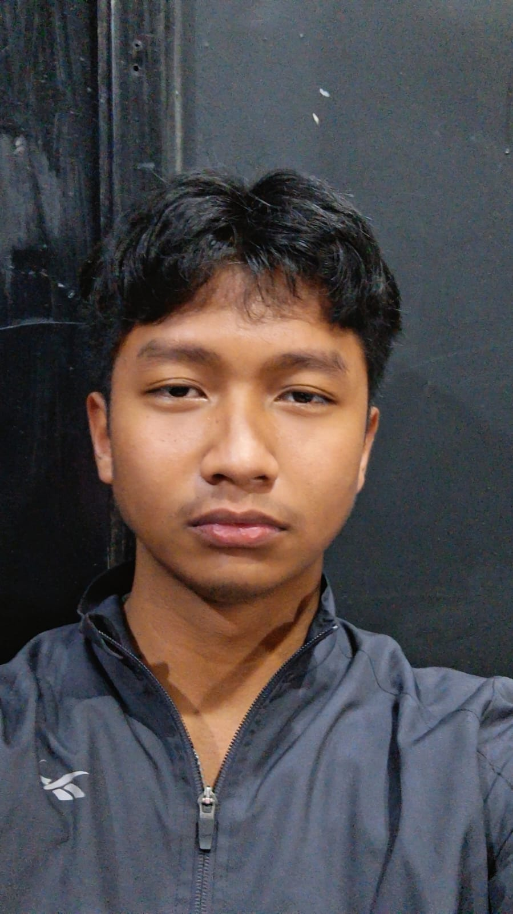
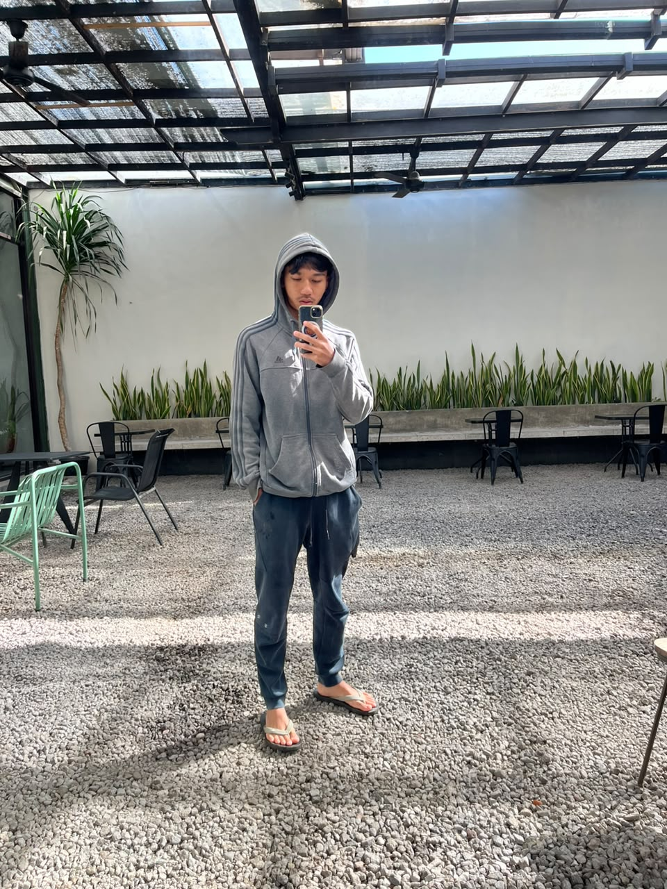

Merancang dengan intuisi, membangun dengan presisi.

Selama enam tahun terakhir saya membantu studio, startup, dan brand untuk terlihat — dan terasa — seperti dirinya sendiri di layar.
Saya percaya desain yang baik lahir dari kesabaran: tipografi yang dipilih dengan sengaja, ruang yang dibiarkan bernapas, dan gerakan yang punya alasan. Kode dan piksel saya perlakukan sama — sebagai bahan untuk bercerita.
Di luar layar, saya menghabiskan waktu dengan kopi manual brew, jurnal analog, dan mabar bareng empat sahabat saya di bawah. Ketelitian kecil seperti itulah yang saya bawa ke setiap proyek.
0+
Tahun pengalaman
0+
Proyek selesai
0+
Klien global
0×
Sahabat mabar